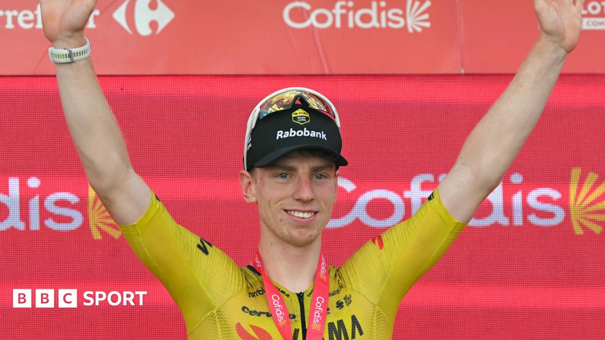

Fifth. Historic.
9 Sep 2026
Stage 17 into Sevilla: Brennan 4:07:15 from the bunch. Youngest ever to five GT stage wins.
Thursday 10 Sep 2026
Stage 17, Wed 9 Sep: Dos Hermanas → Sevilla, ~185 km flat. Winner Matthew Brennan (Visma) 4:07:15; 2. Jordi Meeus; 3. Magnus Cort. Van Aert again midwifed the lead-out. GC unchanged: Mas red, Gall +2:06, Roglič +2:10.
Today Stage 18 ITT: El Puerto de Santa María → Jerez de la Frontera, 32.1 km. First start 14:07 CET; Roglič 16:51, Gall 16:53, Mas 16:55. Flat course, Levante wind risk. First of the decisive late trio before Granada.
Brennan’s Sevilla gallop made him the youngest rider ever to five Grand Tour stage wins on a debut GT — Visma’s seventh win in 17 stages. Uno-X ran a classic train; Visma parked Brennan on Cort’s wheel and he still opened it.
The board finally moves this afternoon. Mas banks 2:10 on Roglič into a specialist chrono; Gall is the meat in the sandwich at +2:06 and the rider most exposed if the time gaps stretch. Van Aert, Küng, and Armirail set early marks; the red jersey starts last.
9 Sep 2026
Stage 17 into Sevilla: Brennan 4:07:15 from the bunch. Youngest ever to five GT stage wins.

10 Sep 2026
El Puerto de Santa María → Jerez ITT. Mas, Gall, Roglič start last. Wind and the watch decide who still smiles Friday.